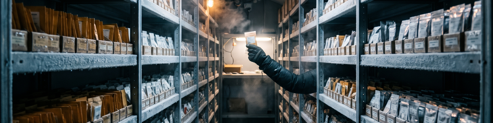

My Obsidian vault: the storehouse where my linked notes live. Reading, research, and project notes kept together as plain Markdown, written to be linked to each other, so a note earns its place by what it connects to and not just by where it sits.
This site stands on the vault's seed commit: a README stating the purpose and the layout, and the starting folders below, each held by a .gitkeep file until real notes land in it. There are no notes in the vault yet, and nothing here pretends otherwise. Notes get added as they are written, and the folders fill in from real use rather than from a bulk import.
The vault is plain files on purpose: Markdown that any editor can read, no database, nothing locked inside one app. Obsidian is the working surface, and the links between notes are the structure that matters. The vault's Obsidian configuration is tracked separately in the Obsidian-Vault-Config repo.